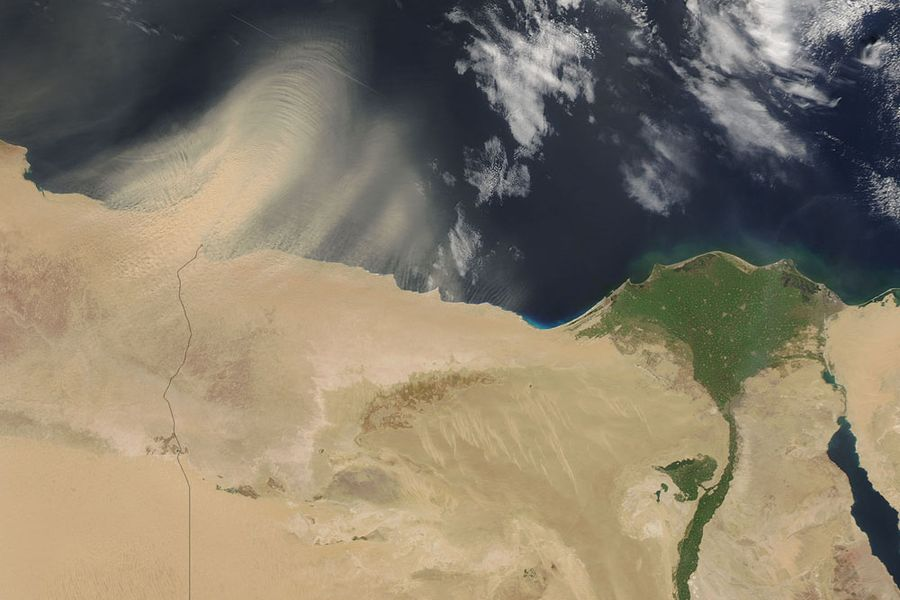

Tenant admin, platform admin
15 minutes to set up, hours to days for the backfill
6 steps, in order
A screen recording of the whole process, start to finish, in the real product.
Step by step
A cloud limit applied at the provider means rejected passes never arrive at all. If every stored pass reads exactly 0.0 percent cloud, the limit is filtering at the source.
Clips
Beside the full walkthrough, each step gets its own short recording, so you can jump straight to the part you need.
Support
Three channels beside the documentation. All three pages are placeholders for now and will be designed next.